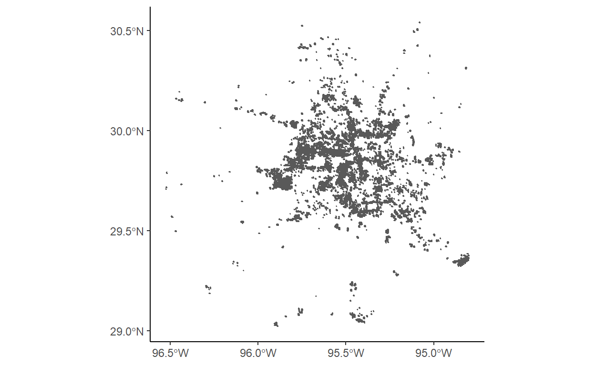
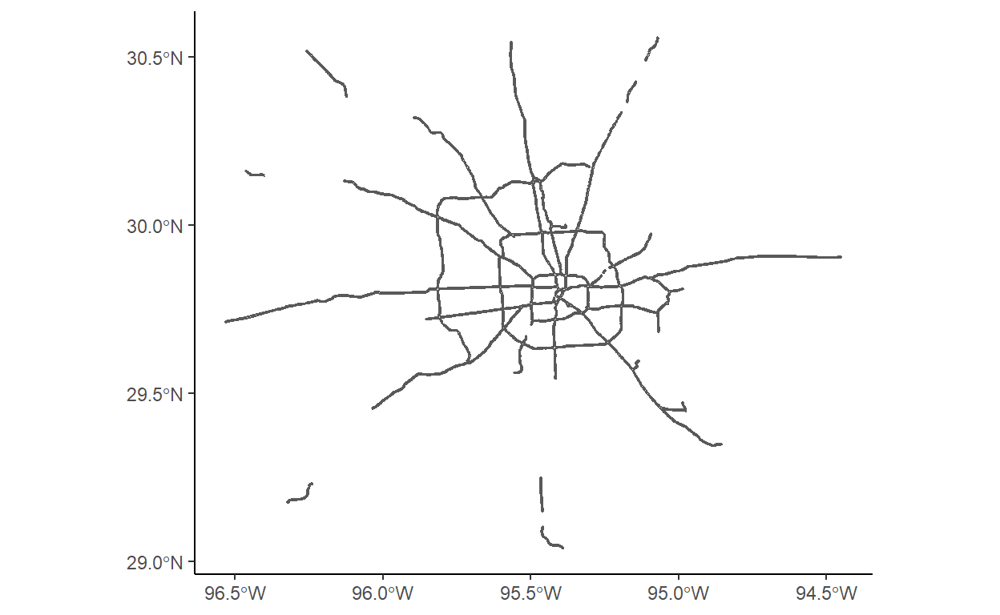
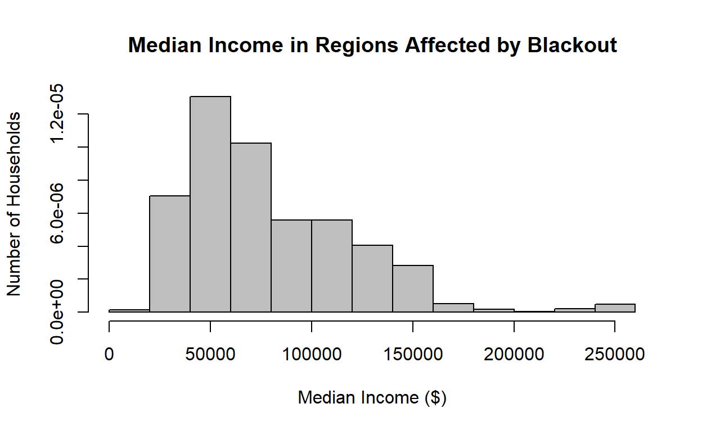
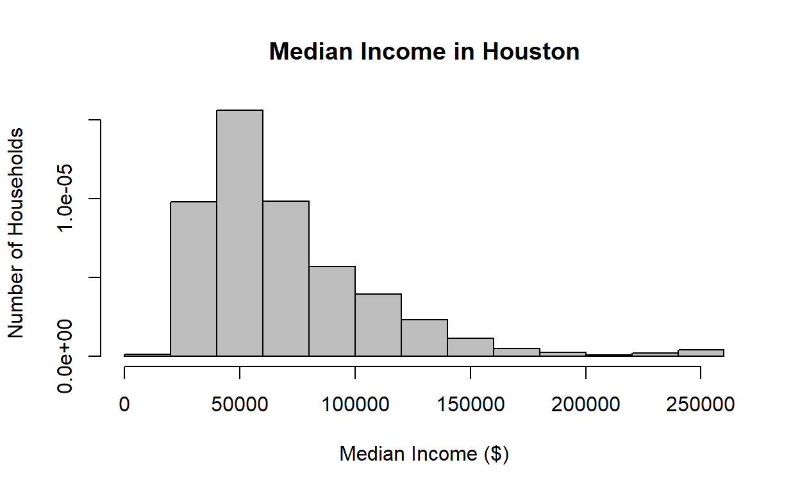

Load libraries
Show code
library(sf)
library(tidyverse)
library(here)
library(stars)
library(rosm)
library(tmap)Function to load the DNB dataset from VNP46A1 granules
Show code
read_dnb <- function(file_name) {
# Reads the "DNB_At_Sensor_Radiance_500m" dataset from a VNP46A1 granule into a STARS object.
# Then read the sinolsoidal tile x/y positions and adjust the STARS dimensions (extent+delta)
# The name of the dataset holding the nightlight band in the granule
dataset_name <- "//HDFEOS/GRIDS/VNP_Grid_DNB/Data_Fields/DNB_At_Sensor_Radiance_500m"
# From the metadata, we pull out a string containing the horizontal and vertical tile index
h_string <- gdal_metadata(file_name)[199]
v_string <- gdal_metadata(file_name)[219]
# We parse the h/v string to pull out the integer number of h and v
tile_h <- as.integer(str_split(h_string, "=", simplify = TRUE)[[2]])
tile_v <- as.integer(str_split(v_string, "=", simplify = TRUE)[[2]])
# From the h/v tile grid position, we get the offset and the extent
west <- (10 * tile_h) - 180
north <- 90 - (10 * tile_v)
east <- west + 10
south <- north - 10
# A tile is 10 degrees and has 2400x2400 grid cells
delta <- 10 / 2400
# Reading the dataset
dnb <- read_stars(file_name, sub = dataset_name)
# Setting the CRS and applying offsets and deltas
st_crs(dnb) <- st_crs(4326)
st_dimensions(dnb)$x$delta <- delta
st_dimensions(dnb)$x$offset <- west
st_dimensions(dnb)$y$delta <- -delta
st_dimensions(dnb)$y$offset <- north
return(dnb)
}Read in day night band (DNB) data
Show code
Feb_07_v5 <- read_dnb(file_name = "data/VNP46A1.A2021038.h08v05.001.2021039064328.h5")//HDFEOS/GRIDS/VNP_Grid_DNB/Data_Fields/DNB_At_Sensor_Radiance_500m, Show code
Feb_07_v6 <- read_dnb(file_name = "data/VNP46A1.A2021038.h08v06.001.2021039064329.h5")//HDFEOS/GRIDS/VNP_Grid_DNB/Data_Fields/DNB_At_Sensor_Radiance_500m, Show code
Feb_16_v5 <- read_dnb(file_name = "data/VNP46A1.A2021047.h08v05.001.2021048091106.h5")//HDFEOS/GRIDS/VNP_Grid_DNB/Data_Fields/DNB_At_Sensor_Radiance_500m, Show code
Feb_16_v6 <- read_dnb(file_name = "data/VNP46A1.A2021047.h08v06.001.2021048091105.h5")//HDFEOS/GRIDS/VNP_Grid_DNB/Data_Fields/DNB_At_Sensor_Radiance_500m, Combine adjacent tiles for each date
Show code
Feb_07_v5_v6 <- st_mosaic(Feb_07_v5, Feb_07_v6)
Feb_16_v5_v6 <- st_mosaic(Feb_16_v5, Feb_16_v6)Create blackout Mask
Show code
## Take the difference of light data from before the storm and after the storm to make a mask of values with a difference greater than 200 nW cm-2 sr-1
diff <- (Feb_07_v5_v6 - Feb_16_v5_v6) > 200
## Convert values with a difference of less than 200 to NA
diff[diff == F] <- NAVectorize blackout mask
Show code
blackout_mask <- st_as_sf(diff)
## Fix invalid geometries
blackout_mask_fixed <- st_make_valid(blackout_mask)
rm(diff, blackout_mask)
gc() used (Mb) gc trigger (Mb) max used (Mb)
Ncells 3047944 162.8 4503170 240.5 4503170 240.5
Vcells 27482570 209.7 132454492 1010.6 156217946 1191.9Crop the vectorized blackout mask to the region of interest
Show code
## Set region of interest
houston <- st_polygon(
list(
rbind(
c(-96.5, 29),
c(-96.5, 30.5),
c(-94.5, 30.5),
c(-94.5, 29),
c(-96.5, 29)
)
)
) %>%
st_sfc(crs = 4326)
## Crop night lights data
intersects <- st_intersects(blackout_mask_fixed, houston, sparse = FALSE)
blackout_cropped <- blackout_mask_fixed[intersects,]
## Transform cropped blackout mask back to EPSG:3083 (NAD83 / Texas Centric Albers Equal Area)
blackout_cropped_NAD83 <- st_transform(blackout_cropped, 3083)
rm(blackout_cropped)
gc() used (Mb) gc trigger (Mb) max used (Mb)
Ncells 3020703 161.4 4503170 240.5 4503170 240.5
Vcells 27554636 210.3 105963594 808.5 156217946 1191.9Sanity check plot
Show code
ggplot() +
geom_sf(data = blackout_cropped_NAD83) +
theme_classic()
Roads data
Show code
query <-
"SELECT *
FROM gis_osm_roads_free_1
WHERE fclass='motorway'"
highways <-
st_read(
"data/gis_osm_roads_free_1.gpkg",
query = query) %>%
st_transform(crs = 3083) %>%
st_buffer(dist = 200) %>%
st_union()Reading query `SELECT *
FROM gis_osm_roads_free_1
WHERE fclass='motorway'' from data source `C:\Users\Cullen\OneDrive\Documents\MEDS\cullen-molitor.github.io\_posts\2021-12-03-houston-blackout-analysis-2021\data\gis_osm_roads_free_1.gpkg'
using driver `GPKG'
Simple feature collection with 6085 features and 10 fields
Geometry type: LINESTRING
Dimension: XY
Bounding box: xmin: -96.50429 ymin: 29.00174 xmax: -94.39619 ymax: 30.50886
Geodetic CRS: WGS 84Show code
cat("\n\n\nAfter Transforming\n\n")After TransformingShow code
highwaysGeometry set for 1 feature
Geometry type: MULTIPOLYGON
Dimension: XY
Bounding box: xmin: 1837420 ymin: 7218299 xmax: 2040621 ymax: 7387049
Projected CRS: NAD83 / Texas Centric Albers Equal AreaBasic highways plot
Show code
ggplot() +
geom_sf(data = highways) +
theme_classic()
Buildings data
Show code
query <-
"SELECT *
FROM gis_osm_buildings_a_free_1
WHERE (type IS NULL AND name IS NULL)
OR type in ('residential', 'apartments', 'house', 'static_caravan', 'detached')"
buildings <-
st_read(
"data/gis_osm_buildings_a_free_1.gpkg",
query = query) %>%
st_transform(crs = 3083) Reading query `SELECT *
FROM gis_osm_buildings_a_free_1
WHERE (type IS NULL AND name IS NULL)
OR type in ('residential', 'apartments', 'house', 'static_caravan', 'detached')' from data source `C:\Users\Cullen\OneDrive\Documents\MEDS\cullen-molitor.github.io\_posts\2021-12-03-houston-blackout-analysis-2021\data\gis_osm_buildings_a_free_1.gpkg'
using driver `GPKG'
Simple feature collection with 475941 features and 5 fields
Geometry type: MULTIPOLYGON
Dimension: XY
Bounding box: xmin: -96.50055 ymin: 29.00344 xmax: -94.53285 ymax: 30.50393
Geodetic CRS: WGS 84Show code
cat("\n\n\nAfter Transforming\n\n")After TransformingShow code
buildingsSimple feature collection with 475941 features and 5 fields
Geometry type: MULTIPOLYGON
Dimension: XY
Bounding box: xmin: 1838180 ymin: 7216470 xmax: 2027040 ymax: 7386914
Projected CRS: NAD83 / Texas Centric Albers Equal Area
First 10 features:
osm_id code fclass name type
1 15289727 1500 building <NA> <NA>
2 15289869 1500 building <NA> <NA>
3 15299261 1500 building <NA> apartments
4 15331425 1500 building <NA> <NA>
5 15349970 1500 building <NA> <NA>
6 20868178 1500 building <NA> <NA>
7 20871848 1500 building <NA> <NA>
8 20871948 1500 building <NA> <NA>
9 20876080 1500 building <NA> <NA>
10 20877241 1500 building <NA> <NA>
geom
1 MULTIPOLYGON (((1948074 728...
2 MULTIPOLYGON (((1927251 732...
3 MULTIPOLYGON (((1984491 730...
4 MULTIPOLYGON (((1932443 731...
5 MULTIPOLYGON (((1925238 732...
6 MULTIPOLYGON (((1922763 727...
7 MULTIPOLYGON (((1922899 727...
8 MULTIPOLYGON (((1922788 727...
9 MULTIPOLYGON (((1922699 727...
10 MULTIPOLYGON (((1922807 727...Census data
Show code
# st_layers("ACS_2019_5YR_TRACT_48_TEXAS.gdb"))
acs_geoms <-
st_read(
"data/ACS_2019_5YR_TRACT_48_TEXAS.gdb",
layer = "ACS_2019_5YR_TRACT_48_TEXAS"
)Reading layer `ACS_2019_5YR_TRACT_48_TEXAS' from data source
`C:\Users\Cullen\OneDrive\Documents\MEDS\cullen-molitor.github.io\_posts\2021-12-03-houston-blackout-analysis-2021\data\ACS_2019_5YR_TRACT_48_TEXAS.gdb'
using driver `OpenFileGDB'
Simple feature collection with 5265 features and 15 fields
Geometry type: MULTIPOLYGON
Dimension: XY
Bounding box: xmin: -106.6456 ymin: 25.83716 xmax: -93.50804 ymax: 36.5007
Geodetic CRS: NAD83Show code
acs_income <-
st_read(
"data/ACS_2019_5YR_TRACT_48_TEXAS.gdb",
layer = "X19_INCOME"
) %>%
select(GEOID, B19013e1) %>%
rename(GEOID_Data = GEOID,
median_income = B19013e1)Reading layer `X19_INCOME' from data source
`C:\Users\Cullen\OneDrive\Documents\MEDS\cullen-molitor.github.io\_posts\2021-12-03-houston-blackout-analysis-2021\data\ACS_2019_5YR_TRACT_48_TEXAS.gdb'
using driver `OpenFileGDB'Show code
acs_geoms_med <- left_join(acs_geoms, acs_income) %>%
st_transform(crs = 3083) Merge datasets
Show code
blackout_no_hwy <- st_difference(blackout_cropped_NAD83, highways)
rm(highways)
gc() used (Mb) gc trigger (Mb) max used (Mb)
Ncells 7126649 380.7 20004878 1068.4 20004878 1068.4
Vcells 56415877 430.5 105963594 808.5 156217946 1191.9Show code
houston_res_wo_power <- buildings[blackout_no_hwy, op = st_intersects]
number_houses_wo_power <- length(houston_res_wo_power$osm_id)The number of buildings that were left without power is 157411.
Show code
acs_building <- st_join(houston_res_wo_power, acs_geoms_med, join = st_intersects)Show code
acs_polygon <- st_join(blackout_no_hwy, acs_geoms_med, join = st_intersects)Show code
houston_bbox <- st_bbox(houston)
houston_map <- osm.raster(houston_bbox)Area and Median Incomes of Residences Affected by Houston Blackout in February, 2021
Show code
tm_shape(houston_map) +
tm_rgb(alpha = .75) +
# tm_shape(acs_geoms_med,
# border.alpha = 0) +
# tm_polygons(col = "median_income") +
tm_shape(blackout_no_hwy) +
tm_polygons(border.alpha = 1) +
tm_shape(acs_polygon) +
tm_fill("median_income",
n = 5,
style = "pretty",
title = "Median Income ($)") +
tm_compass()+
tm_scale_bar()
This map was created by Amber McEldowney and Cullen Molitor 2021-10-24.
Sources: Socioeconomic data: U.S. Census Bureau’s American Community Survey for Texas census tracts in 2019
Light data: NASA’s Level-1 and Atmosphere Archive & Distribution System Distributed Active Archive Center (LAADS DAAC)
Spatial & Buildings Data: OpenStreetMap
Show code
rm(blackout_cropped_NAD83, acs_geoms, acs_income, buildings)
gc() used (Mb) gc trigger (Mb) max used (Mb)
Ncells 4929805 263.3 16003903 854.8 20004878 1068.4
Vcells 46664452 356.1 152763574 1165.5 156217946 1191.9Histogram of Median Income for Houses Affected by Blackout
Show code
Median_Income <- acs_polygon$median_income
hist(Median_Income,
main="Median Income in Regions Affected by Blackout",
xlab="Median Income ($)",
ylab="Number of Households",
col="grey",
freq=FALSE
)
Histogram of Median Income in Houston
Show code
houston_nad <- houston %>%
st_as_sf() %>%
st_transform(houston, crs = 3083)
# acs_geoms_med_bb <- st_join(acs_geoms_med, houston_nad, join = st_intersects)
intersects <- st_intersects(acs_geoms_med, houston_nad, sparse = FALSE)
acs_geoms_med_bb <- acs_geoms_med[intersects,]
Median_Income_Houston <- acs_geoms_med_bb$median_income
hist(Median_Income_Houston,
main="Median Income in Houston",
xlab="Median Income ($)",
ylab="Number of Households",
col="grey",
freq=FALSE
)
We thought it would be interesting to compare the median incomes of households affected by the blackout, to median incomes in Houston in general, but because the blackouts seem to have occured in a more metropolitan area, it is likely the incomes are skewed higher for that area, and it does not give a clear indication of whether median income had an effect on whether or not a household experienced a blackout.